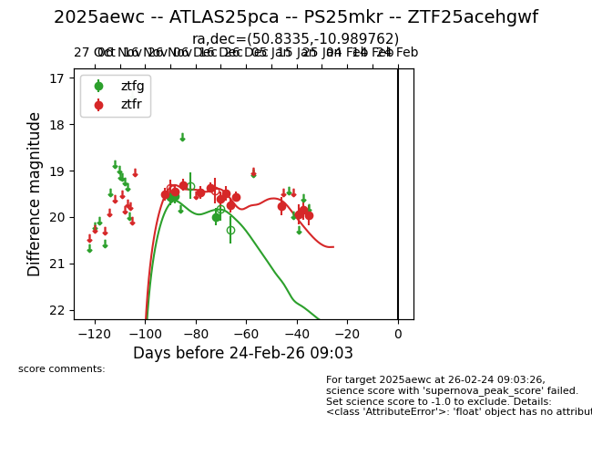
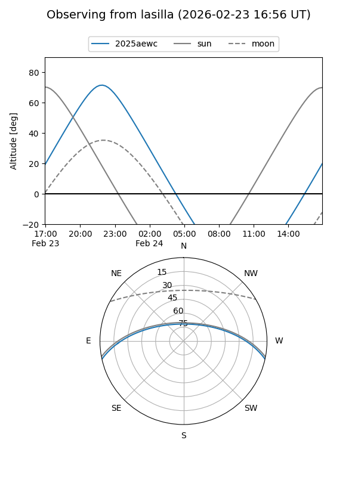
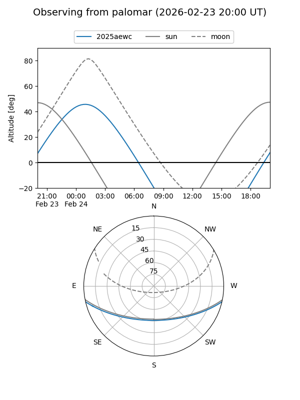
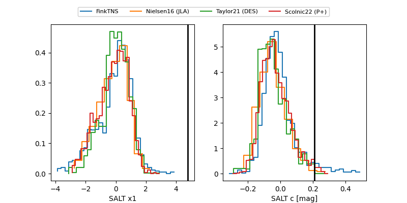

2025aewc
Target 2025aewc at 2025-12-31 17:00
Aliases and brokers:
FINK:
Lasair:
ALeRCE:
TNS:
YSE:
alt names
ZTF25acehgwf (ztf,fink_ztf)
2025aewc (tns,yse)
Coordinates:
equatorial (ra, dec) = 50.8335,-10.98976
equatorial (HMS+DMS) = 03:23:20.03,-10:59:23.14
galactic (l, b) = (196.0598,-50.86207)
Flags:
Photometry:
last ztfg=20.00, ztfr=19.57
3 ztfg, 9 ztfr detections
Lightcurve

Visibility


Additional plots
